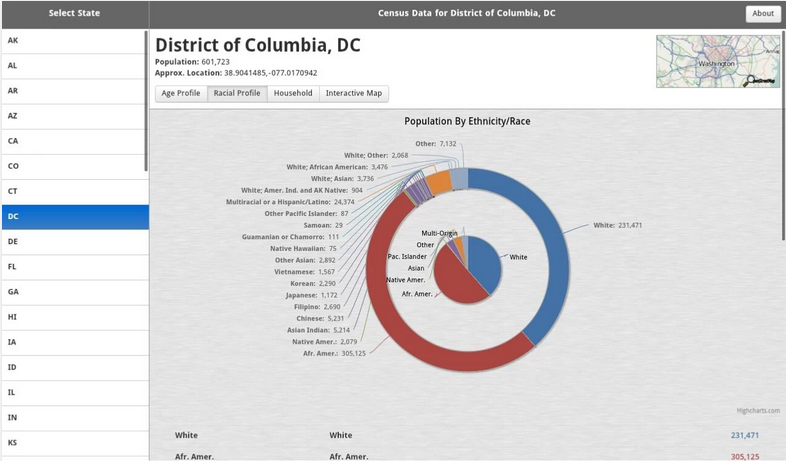
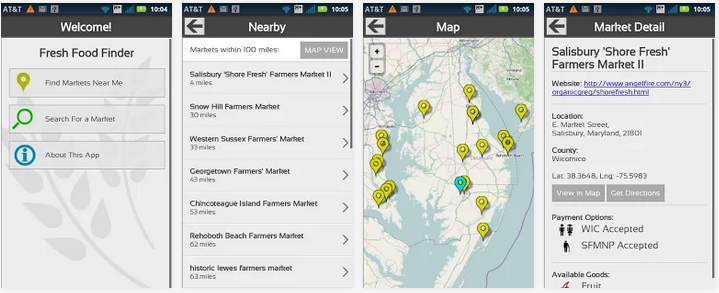
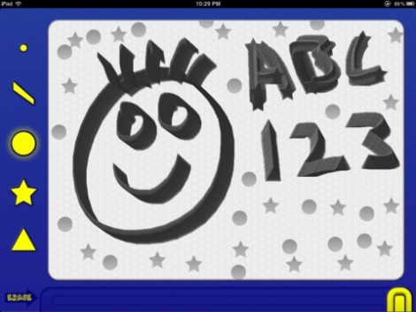
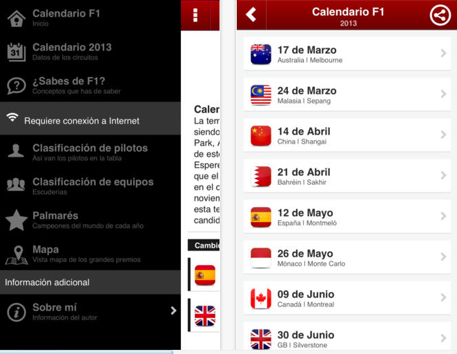
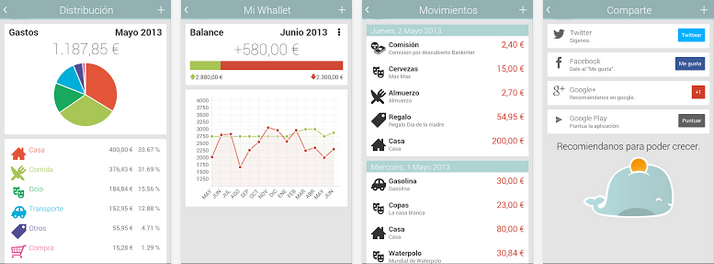

Más alla de ambientes nativos con
Phonegap
By: Jorge Lipa / jorge.lipa@gmail.com / SCESI
PhoneGap es un framework para el desarrollo de aplicaciones móviles multiplataforma, utilizando
html5 css3 y javascript
Esto es real?


Ambientandonos
API Phonegap, permite acceder desde Javascript a funcionalidades del dispositivo.
Acelerometro Camara Contactos
Archivero Geolocalizacion Notificaciones
Captura Audio Almacenaje
Compas Conexion opciones de control
mmm ....
Se puede combinar con otras librerias?
Por supuesto que si
que mas puedo usar?
Canvas WebGL WebAudio WebVideo
XMLHttpRequest WebWorkers WebSockets
Server Sent WebSQL Cache
Proyectos liberados
Open Source - porsupuesto
Census Browser
Aplicacion open source para ver los datos del censo en US del 2010 
Fresh Food Finder
Aplicacion que te permite encontrar establecimientos donde se pueda adquirir alimentos y medicacion segun la FDA 
Lil Doodle
Una aplicacion de dibujo basada en canvas
Calendario formula uno
Permite acceder a informacion sobre las carreras de formula en linea y desconectado
Whallet - Finanzas Personales
Como el nombre lo dice finanzas personales donde los datos se guarda el linea
Que necesito para iniciarme?
Algunas librerias ...
- JDK - Java Development Kit
- Apache Ant
- Android SDK
- NodeJS
Instalacion via NodeJS
npm -g install phonegap
# iniciando un nuevo proyecto
phonegap local create helloworld com.example.helloworld HelloWord